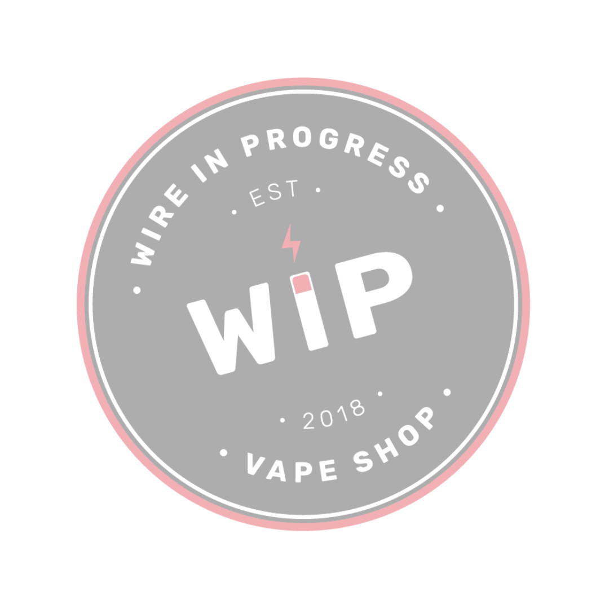

DIY
COIL
PAV
COIL EXPERT

Calculateur de Prêt À Vaper WIP
Résistance estimée d’un montage avec fils âme + claptonnage
Volume du liquide prêt à vaper (ml)
Taux de nicotine souhaité (mg/ml)
Taux de nicotine du booster (mg/ml)
Calculer